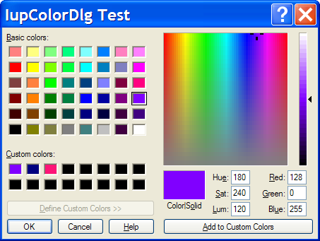
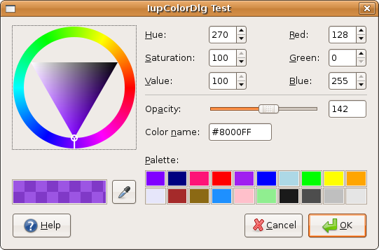

Creates the Color Dialog element. It is a predefined dialog for selecting a color. The dialog can be shown with the IupPopup function only.
Ihandle* IupColorDlg(void); [in C] iup.colordlg() -> (elem: ihandle) [in Lua] colordlg() [in LED]
Returns: the identifier of the created element, or NULL if an error occurs.
ALPHA (GTK only) (in/out): if defined enable an alpha selection addicional control with its initial value. If the user pressed the Ok button contains the returned value.
COLORTABLE (in/out): list of colors separated by ";". In GTK accepts 20 values and if not present the palette will not be visible. In Windows accepts 16 values and will be always visible, even if the colors are not defined (in this case are initialized with black).
PARENTDIALOG: (Creation Only) Name of a dialog to be used as parent. This dialog will be always in front of the parent dialog.
STATUS (out): defined to "1" if the user pressed the Ok button, NULL if pressed the Cancel button.
TITLE: Dialog title.
VALUE (in/out): The initial color value and the returned selected value if the user pressed the Ok button.
HELP_CB: Action generated when the Help button is pressed.
The IupColorDlg is a native pre-defined dialog not altered by IupSetLanguage.
To show the dialog, use function IupPopup. In Lua, use the popup function.
The dialog is mapped only inside IupPopup, IupMap does nothing.
Ihandle* dlg = IupColorDlg();
IupSetAttribute(dlg, "VALUE", "128 0 255");
IupSetAttribute(dlg, "ALPHA", "142");
IupSetAttribute(dlg, "COLORTABLE", "128 0 255;0 0 128;253 20 119");
IupSetAttribute(dlg, "TITLE", "IupColorDlg Test");
IupSetCallback(dlg, "HELP_CB", (Icallback)help_cb);
IupPopup(dlg, IUP_CURRENT, IUP_CURRENT);
if (IupGetInt(dlg, "STATUS"))
{
printf("OK\n");
printf(" COLOR(%s)\n", IupGetAttribute(dlg, "COLOR"));
printf(" COLORTABLE(%s)\n", IupGetAttribute(dlg, "COLORTABLE"));
}
else
printf("CANCEL\n");
IupDestroy(dlg);
| Windows XP |
|---|
|  |
| GTK/GNOME |
|  |